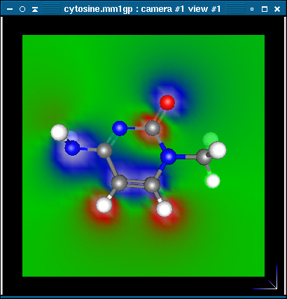
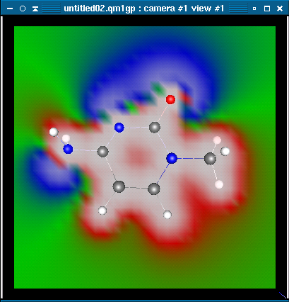

The following visualization tools are available:
The objects are capable to display any continuous mathematical functions.
Currently supported functions are:
As an example, let's create an electrostatic potential plane parallel to the XY plane of the project view. The electrostatic potential of a point is defined as the energy required to move a unit positive charge from infinity to the point. The plane is displayed in the project window, superimposed on the molecule. The plane is colored to indicate the sign and magnitude of the electrostatic potential at that point. Areas with negative electrostatic potentials (a unit positive charge moving from infinity to that point is spontaneous) are colored blue. The move negative the electrostatic potential is, the lighter the shade of blue is. Areas with positive electrostatic potentials are colored red, with the more positive areas colored with a lighter shade of red.
To create an electrostatic potential plane right click on the project window. Now select Objects and then ESP Plane.
A window will appear that looks like this:
Typically only advanced users should modify the text in this box. Click ok to run the calculation You may change the orientation of the plane if you want to have it intersect a different section of the molecule. To do this, make sure the ESP Plane object is selected (after the plane is added it is automatically selected, although using other features may change the selection to a different object). To select the object, click on the Project View tab and then highlight the ESP Plane entry on the list of objects. The ESP Plane is now selected.
Click back onto the camera view. Holding the shift key down will cause any translation, rotation or orbit to only affect the ESP plane.
The molecular mechanical model of Ghemical uses a relatively simple algorithm to generate an electrostatic potential plane. At each point on the plane the electrostatic potential is calculated. It is calculated by adding together the electrostatic potential energy between the point and each atom. The charge used for each atom is the same as the charge displayed by the Measure tool (an approximate charge based on the type of atom and what it is bonded to, ie the oxygen of an alcohol is given a charge of -0.25). Once the energy is calculated, a color for that point is calculated based on the sign and magnitude of the energy.
Electrostatic potential planes can be used predict the location of an electrophilic attack. An electrophile will typically attack in areas near an electrostatic potential minimum, which are colored blue.
The quantum mechanical model can also produce an electrostatic potential plane. The algorithm used by by the quantum mechanical model is more complex than the one used by the molecular mechanics model, so the plane produced may contain different features. The quantum mechanical electrostatic potential plane of cytosine shows a minimum next to the nitrogen where experimental data shows an electrophile will attack. The molecular mechanics ESP plane does not show this minimum.
 